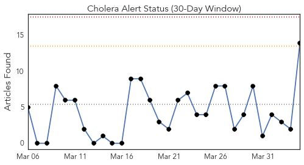
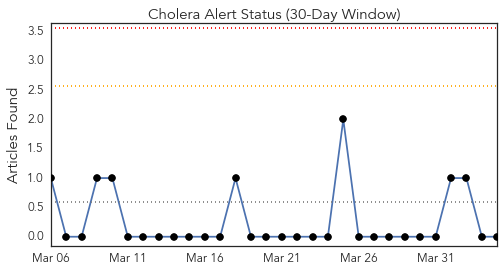
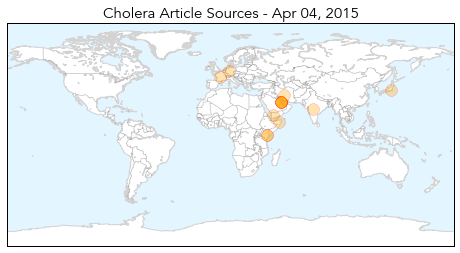
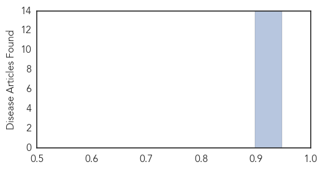

Toggle navigation
Early Warning
Daily Alerts
Cholera
Apr 04, 2015
Compare to:
-
Dengue Fever
Hemmorhagic Fever
Mold/Fungal Infection
Influenza
Meningitis
Pertussis / Whooping Cough
Middle East Respiratory Syndrome
Hepatitis
Chikungunya
Yellow Fever
Bubonic Plague
West Nile Virus
Swine Flu
Ebola
Measles
Unknown
Mumps
30 Day Trends
Web: 0
alerts
, 0
warnings
Twitter: 0
alerts
, 0
warnings
Top Articles:
0.898
DT News Bahrain
0.898
DT News Bahrain
0.898
DT News Bahrain
0.898
DT News Bahrain
0.898
DT News Bahrain
0.898
DT News Bahrain
0.898
DT News Bahrain
0.898
DT News Bahrain
0.898
DT News Bahrain
0.898
DT News Bahrain
0.898
DT News Bahrain
0.898
DT News Bahrain
0.898
DT News Bahrain
0.898
DT News Bahrain
Top Tweets:
No tweets found for Apr 04, 2015
Web/News Articles

Tweets

Article Locations

Article Confidences
